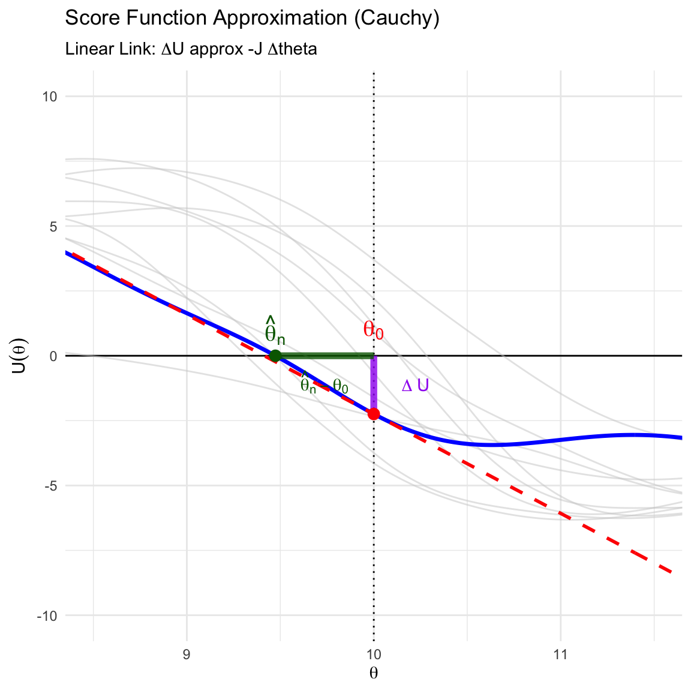

6 Maximum Likelihood Estimation
6.1 Likelihood and MLE
Definition 6.1 (Maximum Likelihood Estimation)
Likelihood Function:
Let \(f(\mathbf{x}|\boldsymbol{\theta})\) be the joint probability density function of the data \(\mathbf{X}\). When viewed as a function of the parameter \(\boldsymbol{\theta}\) given fixed data \(\mathbf{x}\), it is called the likelihood function: \[ L(\boldsymbol{\theta}; \mathbf{x}) = f(\mathbf{x}|\boldsymbol{\theta}) \]
Log-likelihood:
It is usually easier to maximize the natural logarithm of the likelihood: \[ \ell(\boldsymbol{\theta}; \mathbf{x}) = \log L(\boldsymbol{\theta}; \mathbf{x}) \]
Maximum Likelihood Estimator (MLE):
The MLE \(\hat{\boldsymbol{\theta}}_{\text{MLE}}\) is the value that maximizes the likelihood function: \[ \hat{\boldsymbol{\theta}}_{\text{MLE}}(\mathbf{x}) = \operatorname*{argmax}_{\boldsymbol{\theta} \in \Theta} \ell(\boldsymbol{\theta}; \mathbf{x}) \]
Score Function (\(\mathbf{U}\)):
The score function is defined as the gradient of the log-likelihood with respect to the parameter vector. \[ \mathbf{U}(\boldsymbol{\theta}; \mathbf{x}) = \nabla_{\boldsymbol{\theta}} \ell(\boldsymbol{\theta}; \mathbf{x}) \] Finding the MLE often involves solving the score equation: \[ \mathbf{U}(\boldsymbol{\theta}; \mathbf{x}) \equiv 0 \]
Observed Fisher Inforamtion:
\[ \mathbf{J}(\boldsymbol{\theta}; \mathbf{X}) = - \nabla^2 \ell(\boldsymbol{\theta}; \mathbf{X}) \]
(Expected) Fisher Information Matrix (\(\mathbf{I}\)):
The covariance matrix of the score vector. It is a deterministic \(p \times p\) matrix (for a fixed \(\boldsymbol{\theta}\)). \[ \mathbf{I}(\boldsymbol{\theta}) = E_{\boldsymbol{\theta}} \left[ \mathbf{J}(\boldsymbol{\theta}; \mathbf{X}) \right] \]
6.2 Examples
Example 6.1 (Normal Distribution: MLE and Score Convergence) Let \(X_1, \dots, X_n \overset{iid}{\sim} N(\mu, \sigma^2)\). We define \(\boldsymbol{\theta} = (\mu, \sigma^2)^T\).
- Log-Likelihood
\[ \ell(\boldsymbol{\theta}; \mathbf{x}) = -\frac{n}{2} \log(2\pi\sigma^2) - \frac{1}{2\sigma^2} \sum_{i=1}^n (x_i - \mu)^2 \]
- Score Function and MLE
The Score vector \(\mathbf{U}(\boldsymbol{\theta})\) has two components:
Component 1 (Mean): \[ U_\mu = \frac{\partial \ell}{\partial \mu} = \frac{1}{\sigma^2} \sum_{i=1}^n (x_i - \mu) \] Setting \(U_\mu = 0\) yields \(\hat{\mu}_{\text{MLE}} = \bar{x}\).
Component 2 (Variance): \[ U_{\sigma^2} = \frac{\partial \ell}{\partial \sigma^2} = -\frac{n}{2\sigma^2} + \frac{1}{2\sigma^4} \sum_{i=1}^n (x_i - \mu)^2 \] Setting \(U_{\sigma^2} = 0\) yields \(\hat{\sigma}^2_{\text{MLE}} = \frac{1}{n} \sum (x_i - \hat{\mu})^2\).
- Asymptotic Normality of the Score
We now demonstrate that \(\mathbf{U}(\boldsymbol{\theta})\) follows a Normal distribution \(N(\mathbf{0}, \mathbf{I}(\boldsymbol{\theta}))\).
For \(U_\mu\): \[ U_\mu = \frac{n}{\sigma^2} (\bar{X} - \mu) \] Since \(\bar{X} \sim N(\mu, \sigma^2/n)\), \(U_\mu\) is a linear transformation of a Normal variable. It is exactly Normal: \[ E[U_\mu] = 0, \quad \text{Var}(U_\mu) = \left(\frac{n}{\sigma^2}\right)^2 \text{Var}(\bar{X}) = \frac{n^2}{\sigma^4} \frac{\sigma^2}{n} = \frac{n}{\sigma^2} \] Thus, \(U_\mu \sim N(0, \frac{n}{\sigma^2})\).
For \(U_{\sigma^2}\): We rewrite \(U_{\sigma^2}\) as a sum of i.i.d. variables. Let \(Z_i = ((X_i - \mu)/\sigma)^2\). Note that \(Z_i \sim \chi^2_1\), with variance 2. \[ U_{\sigma^2} = \frac{1}{2\sigma^2} \sum_{i=1}^n \left( \left(\frac{X_i - \mu}{\sigma}\right)^2 - 1 \right) = \frac{1}{2\sigma^2} \sum_{i=1}^n (Z_i - 1) \] Since this is a sum of i.i.d. random variables with mean 0, the Central Limit Theorem applies: \[ U_{\sigma^2} \xrightarrow{d} \text{Normal} \] The limiting variance is: \[ \text{Var}(U_{\sigma^2}) = \frac{1}{4\sigma^4} \sum \text{Var}(Z_i) = \frac{1}{4\sigma^4} (n \times 2) = \frac{n}{2\sigma^4} \]
Conclusion: The covariance matrix of the Score approaches the Fisher Information matrix: \[ \text{Var}(\mathbf{U}) = \begin{bmatrix} \frac{n}{\sigma^2} & 0 \\ 0 & \frac{n}{2\sigma^4} \end{bmatrix} = \mathbf{I}(\boldsymbol{\theta}) \]
Example 6.2 (Uniform Distribution (Boundary Case)) Let \(X_1, \dots, X_n \overset{iid}{\sim} \operatorname{\text{Unif}}(0, \theta)\). The likelihood is: \[ L(\theta; \mathbf{x}) = \frac{1}{\theta^n} I(x_{(n)} \le \theta) \] This function strictly decreases for \(\theta \ge x_{(n)}\) and is zero otherwise. Thus: \[ \hat{\theta}_{\text{MLE}} = x_{(n)} \] Note that the Score equation approach fails here because the support depends on \(\theta\), making the log-likelihood discontinuous at the boundary.
6.3 Review of Convergence Theorems for Probability
Theorem 6.1 (Weak Law of Large Numbers (WLLN)) Let \(X_1, \dots, X_n\) be independent and identically distributed (i.i.d.) random variables with mean \(E[X_i] = \mu\) and finite variance \(\text{Var}(X_i) = \sigma^2 < \infty\).
Then, the sample mean \(\bar{X}_n = \frac{1}{n}\sum_{i=1}^n X_i\) converges in probability to \(\mu\): \[ \bar{X}_n \xrightarrow{p} \mu \quad \text{as } n \to \infty \] Formal definition: For any \(\epsilon > 0\), \(\lim_{n \to \infty} P(|\bar{X}_n - \mu| > \epsilon) = 0\).
Theorem 6.2 (Central Limit Theorem for IID Cases) Let \(X_1, \dots, X_n\) be i.i.d. random variables with mean \(E[X_i] = \mu\) and finite variance \(0 < \text{Var}(X_i) = \sigma^2 < \infty\).
Then, the random variable \(\sqrt{n}(\bar{X}_n - \mu)\) converges in distribution to a normal distribution with mean 0 and variance \(\sigma^2\): \[ \sqrt{n}(\bar{X}_n - \mu) \xrightarrow{d} N(0, \sigma^2) \]
Theorem 6.3 (Lindeberg-Feller CLT (For Non-Identical Distributions)) This variation is crucial for regression analysis (e.g., OLS properties with fixed regressors) where variables are independent but not identically distributed.
Let \(X_1, \dots, X_n\) be independent random variables with \(E[X_i] = \mu_i\) and \(\text{Var}(X_i) = \sigma_i^2\). Define the average variance \(\tilde{\sigma}_n^2\): \[ \tilde{\sigma}_n^2 = \frac{1}{n} \sum_{i=1}^n \sigma_i^2 \]
If the Lindeberg Condition holds: For every \(\epsilon > 0\), \[ \lim_{n \to \infty} \frac{1}{n \tilde{\sigma}_n^2} \sum_{i=1}^n E\left[ (X_i - \mu_i)^2 \cdot I\left( |X_i - \mu_i| > \epsilon \sqrt{n \tilde{\sigma}_n^2} \right) \right] = 0 \]
Then the standardized sum converges to a standard normal: \[ \frac{\sum_{i=1}^n (X_i - \mu_i)}{\sqrt{n \tilde{\sigma}_n^2}} \xrightarrow{d} N(0, 1) \]
Corollary 6.1 (Approximating Distribution for Sample Mean (Non-i.i.d.)) Under the conditions of the Lindeberg-Feller CLT, we can derive the asymptotic distribution for the sample mean \(\bar{X}_n = \frac{1}{n}\sum_{i=1}^n X_i\).
Let \(\bar{\mu}_n = \frac{1}{n}\sum_{i=1}^n \mu_i\) be the average mean. Note that the denominator in the CLT is simply \(\sqrt{n} \tilde{\sigma}_n\).
The standardized sum converges to \(N(0,1)\): \[ \frac{\sum (X_i - \mu_i)}{\sqrt{n \tilde{\sigma}_n^2}} = \frac{n(\bar{X}_n - \bar{\mu}_n)}{\sqrt{n} \tilde{\sigma}_n} = \frac{\sqrt{n}(\bar{X}_n - \bar{\mu}_n)}{\tilde{\sigma}_n} \xrightarrow{d} N(0, 1) \]
This implies the following approximate distributions for large \(n\):
For the Sample Mean:
\[ \bar{X}_n \overset{\cdot}{\sim} N\left(\bar{\mu}_n, \frac{\tilde{\sigma}_n^2}{n}\right) \]
For the Scaled Difference (Root-n consistency):
\[ \sqrt{n}(\bar{X}_n - \bar{\mu}_n) \overset{\cdot}{\sim} N\left(0, \tilde{\sigma}_n^2\right) \]
Note: If all \(X_i\) share the same mean \(\mu\), simply replace \(\bar{\mu}_n\) with \(\mu\).
Theorem 6.4 (Slutsky’s Theorem) Let \(X_n\) and \(Y_n\) be sequences of random variables. If \(X_n \xrightarrow{d} X\) and \(Y_n \xrightarrow{p} c\), where \(c\) is a constant, then:
Sum: \(X_n + Y_n \xrightarrow{d} X + c\)
Product: \(X_n Y_n \xrightarrow{d} cX\)
Quotient: \(X_n / Y_n \xrightarrow{d} X/c\) (provided \(c \ne 0\))
Theorem 6.5 (Generalized Slutsky’s Theorem (Continuous Mapping)) The arithmetic operations in Slutsky’s theorem are special cases of a broader property.
Let \(X_n \xrightarrow{d} X\) and \(Y_n \xrightarrow{p} c\), where \(c\) is a constant. Let \(g: \mathbb{R}^2 \to \mathbb{R}^k\) be a function that is continuous at every point \((x, c)\) where \(x\) is in the support of \(X\).
Then: \[ g(X_n, Y_n) \xrightarrow{d} g(X, c) \]
This implies that for any “well-behaved” algebraic combination (polynomials, exponentials, etc.) of a sequence converging in distribution and a sequence converging in probability to a constant, the limit behaves as if the constant were substituted directly.
Example 6.3 (Asymptotic Normality of Sample Variance) Let \(X_1, \dots, X_n \overset{iid}{\sim} N(\mu, \sigma^2)\). We wish to derive the asymptotic distribution of the MLE for variance,
\[\hat{\sigma}^2 = \frac{1}{n}\sum_{i=1}^n (X_i - \bar{X})^2.\]
Algebraic Expansion
We rewrite the estimator by adding and subtracting the true mean \(\mu\): \[ \sum_{i=1}^n (X_i - \bar{X})^2 = \sum_{i=1}^n ((X_i - \mu) - (\bar{X} - \mu))^2 \] \[ = \sum_{i=1}^n (X_i - \mu)^2 - 2(\bar{X} - \mu)\sum_{i=1}^n(X_i - \mu) + n(\bar{X} - \mu)^2 \] Since \(\sum(X_i - \mu) = n(\bar{X} - \mu)\): \[ = \sum_{i=1}^n (X_i - \mu)^2 - n(\bar{X} - \mu)^2 \] Dividing by \(n\), we get: \[ \hat{\sigma}^2 = \frac{1}{n}\sum_{i=1}^n (X_i - \mu)^2 - (\bar{X} - \mu)^2 \]
Scaling by \(\sqrt{n}\)
We rearrange to look at the pivotal quantity \(\sqrt{n}(\hat{\sigma}^2 - \sigma^2)\): \[ \sqrt{n}(\hat{\sigma}^2 - \sigma^2) = \sqrt{n}\left( \frac{1}{n}\sum_{i=1}^n (X_i - \mu)^2 - \sigma^2 \right) - \sqrt{n}(\bar{X} - \mu)^2 \]
Applying Convergence Theorems
Term 1 (CLT):
Let \(W_i = (X_i - \mu)^2\). Since \(X_i \sim N(\mu, \sigma^2)\), \(W_i/\sigma^2 \sim \chi^2_1\). moments of \(W_i\): \(E[W_i] = \sigma^2\) and \(\text{Var}(W_i) = 2\sigma^4\). By the standard CLT: \[ \sqrt{n}(\bar{W} - E[W]) = \sqrt{n}\left( \frac{1}{n}\sum (X_i - \mu)^2 - \sigma^2 \right) \xrightarrow{d} N(0, 2\sigma^4) \]
Term 2 (Slutsky):
Consider the term \(\sqrt{n}(\bar{X} - \mu)^2\). We can rewrite this as: \[ \underbrace{\sqrt{n}(\bar{X} - \mu)}_{\xrightarrow{d} N(0, \sigma^2)} \cdot \underbrace{(\bar{X} - \mu)}_{\xrightarrow{p} 0 \text{ by LLN}} \] By Slutsky’s Theorem, the product converges to \(Z \cdot 0 = 0\).
Conclusion:
Combining the terms: \[ \sqrt{n}(\hat{\sigma}^2 - \sigma^2) \xrightarrow{d} N(0, 2\sigma^4) - 0 = N(0, 2\sigma^4) \]
6.4 Asymptotic Theory of Maximum Likelihood
6.4.1 Consistency of the MLE
6.4.1.1 IID Cases
Consistency establishes that as the sample size grows, the estimator converges in probability to the true parameter value.
Theorem 6.6 (Consistency of MLE) Let \(Y_1, \dots, Y_n\) be i.i.d. with density \(f(y|\boldsymbol{\theta})\). Let \(\boldsymbol{\theta}_0\) be the true parameter. Under regularity conditions (specifically identifiability and compactness), the Maximum Likelihood Estimator \(\hat{\boldsymbol{\theta}}_n\) satisfies: \[ \hat{\boldsymbol{\theta}}_n \xrightarrow{p} \boldsymbol{\theta}_0 \quad \text{as } n \to \infty \]
Proof.
The Objective Function
The MLE maximizes the average log-likelihood: \[ M_n(\boldsymbol{\theta}) = \frac{1}{n} \sum_{i=1}^n \log f(Y_i|\boldsymbol{\theta}) \] By the Weak Law of Large Numbers (WLLN), for any fixed \(\boldsymbol{\theta}\), \(M_n(\boldsymbol{\theta})\) converges in probability to its expectation: \[ M_n(\boldsymbol{\theta}) \xrightarrow{p} M(\boldsymbol{\theta}) = E_{\boldsymbol{\theta}_0} [\log f(Y|\boldsymbol{\theta})] \]
Identifying the Maximum (Information Inequality)
We compare the expected log-likelihood at an arbitrary \(\boldsymbol{\theta}\) versus the true \(\boldsymbol{\theta}_0\). Consider the difference: \[ M(\boldsymbol{\theta}) - M(\boldsymbol{\theta}_0) = E_{\boldsymbol{\theta}_0} \left[ \log f(Y|\boldsymbol{\theta}) - \log f(Y|\boldsymbol{\theta}_0) \right] = E_{\boldsymbol{\theta}_0} \left[ \log \left( \frac{f(Y|\boldsymbol{\theta})}{f(Y|\boldsymbol{\theta}_0)} \right) \right] \] By Jensen’s Inequality (since \(\log(y)\) is strictly concave), \(E[\log Z] \le \log E[Z]\). \[ E_{\boldsymbol{\theta}_0} \left[ \log \left( \frac{f(Y|\boldsymbol{\theta})}{f(Y|\boldsymbol{\theta}_0)} \right) \right] \le \log E_{\boldsymbol{\theta}_0} \left[ \frac{f(Y|\boldsymbol{\theta})}{f(Y|\boldsymbol{\theta}_0)} \right] \] Evaluating the expectation on the right: \[ E_{\boldsymbol{\theta}_0} \left[ \frac{f(Y|\boldsymbol{\theta})}{f(Y|\boldsymbol{\theta}_0)} \right] = \int \left( \frac{f(y|\boldsymbol{\theta})}{f(y|\boldsymbol{\theta}_0)} \right) f(y|\boldsymbol{\theta}_0) \, dy = \int f(y|\boldsymbol{\theta}) \, dy = 1 \] Therefore: \[ M(\boldsymbol{\theta}) - M(\boldsymbol{\theta}_0) \le \log(1) = 0 \implies M(\boldsymbol{\theta}) \le M(\boldsymbol{\theta}_0) \] Assuming the model is identifiable (i.e., \(f(y|\boldsymbol{\theta}) = f(y|\boldsymbol{\theta}_0) \iff \boldsymbol{\theta} = \boldsymbol{\theta}_0\)), the maximum is unique at \(\boldsymbol{\theta}_0\). Since \(\hat{\boldsymbol{\theta}}_n\) maximizes \(M_n(\boldsymbol{\theta})\), which converges to \(M(\boldsymbol{\theta})\), \(\hat{\boldsymbol{\theta}}_n\) must converge to \(\boldsymbol{\theta}_0\).
6.4.1.2 Non-IID Cases
In regression settings, observations are independent but not identically distributed (i.n.i.d.). We generalize the consistency result by requiring that the “average” information accumulates sufficiently.
Theorem 6.7 (Consistency of MLE (General Case)) Let \(Y_1, \dots, Y_n\) be independent observations with densities \(f_i(y|\boldsymbol{\theta})\) (e.g., depending on covariates \(x_i\)). Let \(\boldsymbol{\theta}_0\) be the true parameter.
Under the following conditions:
Parameter Space: Compact parameter space \(\Theta\).
Identification: For any \(\boldsymbol{\theta} \neq \boldsymbol{\theta}_0\), the average Kullback-Leibler divergence is strictly positive in the limit:
\[\liminf_{n \to \infty} \frac{1}{n} \sum_{i=1}^n \text{KL}(f_i(\cdot|\boldsymbol{\theta}_0) || f_i(\cdot|\boldsymbol{\theta})) > 0\]
Uniform Convergence: The log-likelihood satisfies a Uniform Law of Large Numbers (ULLN).
Then \(\hat{\boldsymbol{\theta}}_n \xrightarrow{p} \boldsymbol{\theta}_0\).
Proof.
The Objective Function
The MLE maximizes the average log-likelihood: \[ M_n(\boldsymbol{\theta}) = \frac{1}{n} \sum_{i=1}^n \log f_i(Y_i|\boldsymbol{\theta}) \] Unlike the i.i.d. case, the terms in the sum have different expectations. We rely on a WLLN for Independent Variables (e.g., Chebyshev’s WLLN). Provided the variances are bounded, \(M_n(\boldsymbol{\theta})\) converges in probability to the average expectation: \[ M_n(\boldsymbol{\theta}) \xrightarrow{p} \bar{M}_n(\boldsymbol{\theta}) = \frac{1}{n} \sum_{i=1}^n E_{\boldsymbol{\theta}_0} [\log f_i(Y_i|\boldsymbol{\theta})] \] Note: For consistency of the maximizer, we strictly require Uniform Convergence over \(\Theta\), not just pointwise convergence.
Identifying the Maximum (Average KL Divergence)
We compare the limit function at \(\boldsymbol{\theta}\) versus \(\boldsymbol{\theta}_0\). Consider the average difference: \[ \bar{M}_n(\boldsymbol{\theta}) - \bar{M}_n(\boldsymbol{\theta}_0) = \frac{1}{n} \sum_{i=1}^n E_{\boldsymbol{\theta}_0} \left[ \log \left( \frac{f_i(Y_i|\boldsymbol{\theta})}{f_i(Y_i|\boldsymbol{\theta}_0)} \right) \right] \] By Jensen’s Inequality applied to each term in the sum: \[ E_{\boldsymbol{\theta}_0} \left[ \log \frac{f_i(Y_i|\boldsymbol{\theta})}{f_i(Y_i|\boldsymbol{\theta}_0)} \right] \le \log E_{\boldsymbol{\theta}_0} \left[ \frac{f_i(Y_i|\boldsymbol{\theta})}{f_i(Y_i|\boldsymbol{\theta}_0)} \right] = \log(1) = 0 \] Summing these inequalities implies that \(\bar{M}_n(\boldsymbol{\theta})\) is uniquely maximized at \(\boldsymbol{\theta}_0\) (provided the identification condition holds). Since the sample function \(M_n(\boldsymbol{\theta})\) converges uniformly to this maximized limit function, the argmax \(\hat{\boldsymbol{\theta}}_n\) converges to \(\boldsymbol{\theta}_0\).
6.4.2 Asymptotic Normality of the Score Vector
The Score function acts as the “engine” for the normality of the MLE. We treat the I.I.D. and non-I.I.D. cases separately.
6.4.2.1 IID Cases
Theorem 6.8 (Normality of Score (I.I.D.)) Let \(Y_1, \dots, Y_n\) be i.i.d. with density \(f(y|\boldsymbol{\theta})\). Define the Fisher Information matrix for a single observation as the expected outer product of the score: \[ \mathbf{I}_1(\boldsymbol{\theta}) = E\left[ \left( \nabla_{\boldsymbol{\theta}} \log f(Y_1|\boldsymbol{\theta}) \right) \left( \nabla_{\boldsymbol{\theta}} \log f(Y_1|\boldsymbol{\theta}) \right)^T \right] \] Then, the scaled total score vector converges to a Normal distribution: \[ \frac{1}{\sqrt{n}} \mathbf{U}_n(\boldsymbol{\theta}_0; \mathbf{Y}) \xrightarrow{d} N(\mathbf{0}, \mathbf{I}_1(\boldsymbol{\theta}_0)) \]
Proof. The total score is the sum of independent score contributions: \[ \mathbf{U}_n(\boldsymbol{\theta}_0; \mathbf{Y}) = \sum_{i=1}^n \nabla \log f(Y_i|\boldsymbol{\theta}_0) = \sum_{i=1}^n \mathbf{u}_i \] From Bartlett’s Identities, for each observation \(i\):
Mean
\(E[\mathbf{u}_i] = \mathbf{0}\).
Variance
\(\text{Var}(\mathbf{u}_i) = E[\mathbf{u}_i \mathbf{u}_i^T] = \mathbf{I}_1(\boldsymbol{\theta}_0)\).
Since the terms \(\mathbf{u}_i\) are i.i.d. with finite variance, we apply the Multivariate Central Limit Theorem (Lindeberg-Lévy): \[ \frac{1}{\sqrt{n}} \sum_{i=1}^n \mathbf{u}_i \xrightarrow{d} N(\mathbf{0}, \text{Var}(\mathbf{u}_i)) = N(\mathbf{0}, \mathbf{I}_1(\boldsymbol{\theta}_0)) \]
6.4.2.2 Case B: The Non-I.I.D. Case (Regression Setting)
Theorem 6.9 (Normality of Score (Independent, Non-Identical)) Let \(Y_1, \dots, Y_n\) be independent but not necessarily identically distributed (e.g., due to different covariates). Let \(\mathbf{I}_n(\boldsymbol{\theta}_0) = \sum_{i=1}^n \text{Var}(\mathbf{u}_i)\) be the total information.
Define the Average Fisher Information Matrix: \[ \bar{\mathbf{I}}_n(\boldsymbol{\theta}_0) = \frac{1}{n} \mathbf{I}_n(\boldsymbol{\theta}_0) = \frac{1}{n} \sum_{i=1}^n E[\mathbf{u}_i \mathbf{u}_i^T] \]
If the Lindeberg Condition is satisfied for the sequence of score vectors, then the standardized score converges to a standard Normal: \[ \left( \mathbf{I}_n(\boldsymbol{\theta}_0) \right)^{-1/2} \mathbf{U}_n(\boldsymbol{\theta}_0; \mathbf{Y}) \xrightarrow{d} N(\mathbf{0}, \mathbf{I}_p) \]
Approximating Distribution: If the average information converges to a positive definite limit \(\bar{\mathbf{I}}_n \to \mathbf{I}_{\infty}\), we have the following approximation for the scaled average score \(\sqrt{n} \bar{\mathbf{U}}_n(\boldsymbol{\theta}_0; \mathbf{Y})\): \[ \sqrt{n} \bar{\mathbf{U}}_n(\boldsymbol{\theta}_0; \mathbf{Y}) = \frac{1}{\sqrt{n}} \mathbf{U}_n(\boldsymbol{\theta}_0; \mathbf{Y}) \overset{\cdot}{\sim} N(\mathbf{0}, \bar{\mathbf{I}}_n(\boldsymbol{\theta}_0)) \]
Proof. This is a direct application of the Lindeberg-Feller Central Limit Theorem. The total score \(\mathbf{U}_n(\boldsymbol{\theta}_0; \mathbf{Y}) = \sum \mathbf{u}_i\) is a sum of independent random vectors with mean \(\mathbf{0}\) and variances \(\text{Var}(\mathbf{u}_i)\). Provided that no single observation’s score contribution dominates the sum (the Lindeberg condition), the standardized sum converges to a standard Normal distribution.
6.4.3 Asymptotic Normality of the MLE
We now transfer the normality from the Score function to the estimator \(\hat{\boldsymbol{\theta}}\) using a Taylor expansion (the Delta Method logic).
Definition 6.2 (Regularity Conditions for Asymptotic Normality) The following conditions are required to ensure the validity of the Taylor expansion and the convergence of the remainder term:
Interiority: The true parameter \(\boldsymbol{\theta}_0\) lies in the interior of the parameter space \(\Theta\).
Smoothness: The log-likelihood function \(\log f(y|\boldsymbol{\theta})\) is three times continuously differentiable with respect to \(\boldsymbol{\theta}\).
Boundedness: The third derivatives are bounded by an integrable function \(M(y)\) (to control the Taylor remainder).
Positive Information: The Fisher Information Matrix \(\mathbf{I}_1(\boldsymbol{\theta}_0)\) exists and is non-singular (positive definite).
Interchangeability: Differentiation and integration can be interchanged for the density \(f(y|\boldsymbol{\theta})\).
Theorem 6.10 (Asymptotic Normality of MLE) Under the regularity conditions above, the MLE \(\hat{\boldsymbol{\theta}}_n\) satisfies: \[ \sqrt{n}(\hat{\boldsymbol{\theta}}_n - \boldsymbol{\theta}_0) \xrightarrow{d} N\left(\mathbf{0}, [\mathbf{I}_1(\boldsymbol{\theta}_0)]^{-1}\right) \]
Proof.
Taylor Expansion of Score Equation
We expand the Score function \(\mathbf{U}_n(\boldsymbol{\theta})\) around the true parameter \(\boldsymbol{\theta}_0\). Since \(\hat{\boldsymbol{\theta}}_n\) is the MLE, \(\mathbf{U}_n(\hat{\boldsymbol{\theta}}_n) = \mathbf{0}\).
Define the Observed Information Matrix as the negative Hessian: \[ \mathbf{J}_n(\boldsymbol{\theta}) = -\nabla^2 \ell_n(\boldsymbol{\theta}) \]
The Linear Link (Score vs. Parameter Error) The fundamental approximation linking the random Score vector to the estimation error is: \[ \underbrace{\mathbf{U}_n(\hat{\boldsymbol{\theta}}_n)}_{=\mathbf{0}} \approx \mathbf{U}_n(\boldsymbol{\theta}_0) - \mathbf{J}_n(\boldsymbol{\theta}_0) (\hat{\boldsymbol{\theta}}_n - \boldsymbol{\theta}_0) \] \[ \implies \quad \mathbf{U}_n(\boldsymbol{\theta}_0) \approx \mathbf{J}_n(\boldsymbol{\theta}_0) (\hat{\boldsymbol{\theta}}_n - \boldsymbol{\theta}_0) \]
Scaling and Inversion
Multiply the link equation by \(\frac{1}{\sqrt{n}}\) and introduce \(n\) to the Observed Information term to stabilize the limits: \[ \frac{1}{\sqrt{n}} \mathbf{U}_n(\boldsymbol{\theta}_0) \approx \left( \frac{1}{n} \mathbf{J}_n(\boldsymbol{\theta}_0) \right) \sqrt{n}(\hat{\boldsymbol{\theta}}_n - \boldsymbol{\theta}_0) \] Rearranging to solve for the estimator’s distribution: \[ \sqrt{n}(\hat{\boldsymbol{\theta}}_n - \boldsymbol{\theta}_0) \approx \left[ \frac{1}{n} \mathbf{J}_n(\boldsymbol{\theta}_0) \right]^{-1} \left[ \frac{1}{\sqrt{n}} \mathbf{U}_n(\boldsymbol{\theta}_0) \right] \]
Convergence of Components
Numerator (Score): From the I.I.D. Score Normality theorem: \[ \frac{1}{\sqrt{n}} \mathbf{U}_n(\boldsymbol{\theta}_0) \xrightarrow{d} Z \sim N(\mathbf{0}, \mathbf{I}_1(\boldsymbol{\theta}_0)) \]
Denominator (Observed Info): By the WLLN, the average observed information converges to the expected information: \[ \frac{1}{n} \mathbf{J}_n(\boldsymbol{\theta}_0) = -\frac{1}{n} \sum_{i=1}^n \nabla^2 \log f(Y_i|\boldsymbol{\theta}_0) \xrightarrow{p} -E[\nabla^2 \log f] = \mathbf{I}_1(\boldsymbol{\theta}_0) \]
Slutsky’s Theorem
Combining these via Slutsky’s Theorem (matrix inverse is a continuous mapping): \[ \sqrt{n}(\hat{\boldsymbol{\theta}}_n - \boldsymbol{\theta}_0) \xrightarrow{d} [\mathbf{I}_1(\boldsymbol{\theta}_0)]^{-1} Z \] The variance of this limiting distribution is: \[ \text{Var}([\mathbf{I}_1]^{-1} Z) = \mathbf{I}_1^{-1} \text{Var}(Z) (\mathbf{I}_1^{-1})^T = \mathbf{I}_1^{-1} \mathbf{I}_1 \mathbf{I}_1^{-1} = \mathbf{I}_1^{-1} \] Thus: \[ \sqrt{n}(\hat{\boldsymbol{\theta}}_n - \boldsymbol{\theta}_0) \xrightarrow{d} N\left( \mathbf{0}, [\mathbf{I}_1(\boldsymbol{\theta}_0)]^{-1} \right) \]
Code
library(ggplot2)
library(dplyr)
# --- 1. Settings and Data Generation (Cauchy) ---
set.seed(42)
n_sim <- 10
n_obs <- 10
theta_0 <- 10
gamma <- 1
# Generate Datasets
datasets <- matrix(rcauchy(n_sim * n_obs, location = theta_0, scale = gamma),
nrow = n_sim, ncol = n_obs)
# Define Score and Hessian Functions
score_cauchy <- function(y, theta) {
sum( (2 * (y - theta)) / (1 + (y - theta)^2) )
}
hessian_cauchy <- function(y, theta) {
u <- y - theta
sum( (2 * (u^2 - 1)) / (1 + u^2)^2 )
}
# --- 2. Analyze Main Dataset ---
y_main <- datasets[1, ]
# Find MLE numerically
mle_res <- optimize(function(th) sum(dcauchy(y_main, location = th, log = TRUE)),
interval = c(theta_0 - 5, theta_0 + 5), maximum = TRUE)
theta_hat <- mle_res$maximum
# Calculate Geometry at theta_0
u_true <- score_cauchy(y_main, theta_0)
slope_true <- hessian_cauchy(y_main, theta_0)
# --- 3. Prepare Plot Data ---
theta_seq <- seq(8, 12, length.out = 300)
# Curves Data
plot_data <- data.frame()
for(i in 1:n_sim) {
y_curr <- datasets[i, ]
u_vals <- sapply(theta_seq, function(th) score_cauchy(y_curr, th))
plot_data <- rbind(plot_data, data.frame(theta = theta_seq, U = u_vals, sim_id = as.factor(i), is_main = (i == 1)))
}
# Linear Approximation Data (Tangent Line)
tangent_data <- data.frame(
theta = theta_seq,
U_lin = u_true + slope_true * (theta_seq - theta_0)
)
# --- 4. Plotting ---
ggplot() +
# Axes Reference
geom_hline(yintercept = 0, color = "black", size = 0.5) +
geom_vline(xintercept = theta_0, color = "black", linetype = "dotted") +
# A. Background Curves (Grey)
geom_line(data = subset(plot_data, !is_main),
aes(x = theta, y = U, group = sim_id),
color = "grey80", alpha = 0.5) +
# B. Main Curve (Blue) & Tangent (Red Dashed)
geom_line(data = subset(plot_data, is_main), aes(x = theta, y = U),
color = "blue", size = 1.2) +
geom_line(data = tangent_data, aes(x = theta, y = U_lin),
color = "red", linetype = "dashed", size = 1) +
# C. THICK SEGMENTS for Delta U and Delta Theta
# Vertical Segment (Delta U): From axis to curve at theta_0
# Color: Purple
annotate("segment", x = theta_0, xend = theta_0, y = 0, yend = u_true,
color = "purple", size = 2, alpha = 0.8) +
# Horizontal Segment (Delta Theta): From theta_0 to theta_hat along the axis
# Color: Dark Green
annotate("segment", x = theta_0, xend = theta_hat, y = 0, yend = 0,
color = "darkgreen", size = 2, alpha = 0.8) +
# D. Points
geom_point(aes(x = theta_0, y = u_true), color = "red", size = 3) +
geom_point(aes(x = theta_hat, y = 0), color = "darkgreen", size = 3) +
# E. Labels (Delta labels)
annotate("text", x = theta_0 + 0.15, y = u_true / 2,
label = "Delta~U", parse = TRUE, color = "purple", fontface = "bold", hjust = 0) +
annotate("text", x = (theta_0 + theta_hat)/2, y = -1.0,
label = "hat(theta)[n] - theta[0]", parse = TRUE, color = "darkgreen", fontface = "bold") +
# F. Parameter Labels (Revised Position)
annotate("text", x = theta_hat, y = 1, label = "hat(theta)[n]", parse = TRUE, color = "darkgreen", size = 5) +
annotate("text", x = theta_0, y = 1, label = "theta[0]", parse = TRUE, color = "red", size = 5) +
# G. Styling
coord_cartesian(ylim = c(-10, 10), xlim = c(8.5, 11.5)) +
labs(title = expression(paste("Score Function Approximation (Cauchy)")),
subtitle = expression(paste("Linear Link: ", Delta, "U ", approx, " -J ", Delta, "theta")),
x = expression(theta), y = expression(U(theta))) +
theme_minimal()

6.4.4 Wilks’ Theorem
6.4.4.1 Wilks’ Theorem (Simple Null Hypothesis)
Theorem 6.11 (Wilks’ Theorem (Simple Null Hypothesis)) Consider testing \(H_0: \boldsymbol{\theta} = \boldsymbol{\theta}_0\) against \(H_1: \boldsymbol{\theta} \ne \boldsymbol{\theta}_0\).
Define the Likelihood Ratio \(\Lambda_n\) as: \[ \Lambda_n = \frac{L(\boldsymbol{\theta}_0)}{L(\hat{\boldsymbol{\theta}}_{\text{MLE}})} \]
Define the Deviance Statistic \(D_n\) as: \[ D_n = -2 \log \Lambda_n = 2 [\ell_n(\hat{\boldsymbol{\theta}}) - \ell_n(\boldsymbol{\theta}_0)] \]
Under the null hypothesis, the Deviance converges to a Chi-squared distribution: \[ D_n \xrightarrow{d} \chi^2_p \] where \(p\) is the dimension of \(\boldsymbol{\theta}\).
Proof. We express the likelihood difference \(\Delta \ell\) in terms of the Score vector \(\mathbf{U}_n(\boldsymbol{\theta}_0)\) and apply the Central Limit Theorem directly to the Score.
Quadratic Approximation of Deviance
Expand \(\ell_n(\boldsymbol{\theta}_0)\) around the MLE \(\hat{\boldsymbol{\theta}}\). Since the gradient at the MLE is zero (\(\mathbf{U}_n(\hat{\boldsymbol{\theta}}) = \mathbf{0}\)), the first-order term vanishes: \[ \ell_n(\boldsymbol{\theta}_0) \approx \ell_n(\hat{\boldsymbol{\theta}}) - \frac{1}{2} (\hat{\boldsymbol{\theta}} - \boldsymbol{\theta}_0)^T \mathbf{J}_n(\hat{\boldsymbol{\theta}}) (\hat{\boldsymbol{\theta}} - \boldsymbol{\theta}_0) \] Rearranging for the Deviance (\(D_n\)): \[ D_n = 2[\ell_n(\hat{\boldsymbol{\theta}}) - \ell_n(\boldsymbol{\theta}_0)] \approx (\hat{\boldsymbol{\theta}} - \boldsymbol{\theta}_0)^T \mathbf{J}_n(\hat{\boldsymbol{\theta}}) (\hat{\boldsymbol{\theta}} - \boldsymbol{\theta}_0) \]
Substituting the Score
Recall the linear link we established in the Normality proof: \(\mathbf{U}_n(\boldsymbol{\theta}_0) \approx \mathbf{J}_n(\boldsymbol{\theta}_0)(\hat{\boldsymbol{\theta}} - \boldsymbol{\theta}_0)\). Inverting this relationship gives the parameter error in terms of the Score: \[ (\hat{\boldsymbol{\theta}} - \boldsymbol{\theta}_0) \approx \mathbf{J}_n^{-1} \mathbf{U}_n(\boldsymbol{\theta}_0) \] Substitute this back into the Deviance equation: \[ D_n \approx (\mathbf{J}_n^{-1} \mathbf{U}_n)^T \mathbf{J}_n (\mathbf{J}_n^{-1} \mathbf{U}_n) \] \[ \boxed{D_n \approx \mathbf{U}_n(\boldsymbol{\theta}_0)^T \mathbf{J}_n^{-1} \mathbf{U}_n(\boldsymbol{\theta}_0)} \] This form (the Score Statistic) shows that the deviance is essentially the squared length of the Score vector, standardized by the Information.
Asymptotic Convergence
We rewrite the expression using normalized quantities to apply the limit theorems.
- Score: \(\frac{1}{\sqrt{n}} \mathbf{U}_n(\boldsymbol{\theta}_0) \xrightarrow{d} \mathbf{Z} \sim N(\mathbf{0}, \mathbf{I}_1)\).
- Information: \(\frac{1}{n} \mathbf{J}_n \xrightarrow{p} \mathbf{I}_1\).
\[ D_n \approx \left( \frac{1}{\sqrt{n}} \mathbf{U}_n \right)^T \left( \frac{1}{n} \mathbf{J}_n \right)^{-1} \left( \frac{1}{\sqrt{n}} \mathbf{U}_n \right) \] Taking the limit: \[ D_n \xrightarrow{d} \mathbf{Z}^T \mathbf{I}_1^{-1} \mathbf{Z} \] Since \(\mathbf{Z} \sim N(\mathbf{0}, \mathbf{I}_1)\), the quadratic form follows a Chi-squared distribution: \[ \mathbf{Z}^T \mathbf{I}_1^{-1} \mathbf{Z} \sim \chi^2_p \]
Code
library(ggplot2)
library(dplyr)
library(latex2exp)
# --- 1. Settings and Data Generation (Cauchy) ---
set.seed(42)
n_sim <- 10
n_obs <- 10
theta_0 <- 10
gamma <- 1
datasets <- matrix(rcauchy(n_sim * n_obs, location = theta_0, scale = gamma),
nrow = n_sim, ncol = n_obs)
score_cauchy <- function(y, theta) {
sum( (2 * (y - theta)) / (1 + (y - theta)^2) )
}
hessian_cauchy <- function(y, theta) {
u <- y - theta
sum( (2 * (u^2 - 1)) / (1 + u^2)^2 )
}
# --- 2. Analyze Main Dataset ---
y_main <- datasets[1, ]
mle_res <- optimize(function(th) sum(dcauchy(y_main, location = th, log = TRUE)),
interval = c(theta_0 - 5, theta_0 + 5), maximum = TRUE)
theta_hat <- mle_res$maximum
u_true <- score_cauchy(y_main, theta_0)
slope_true <- hessian_cauchy(y_main, theta_0)
# --- 3. Prepare Plot Data ---
theta_seq <- seq(8, 12, length.out = 300)
plot_data <- data.frame()
for(i in 1:n_sim) {
y_curr <- datasets[i, ]
u_vals <- sapply(theta_seq, function(th) score_cauchy(y_curr, th))
plot_data <- rbind(plot_data, data.frame(theta = theta_seq, U = u_vals, sim_id = as.factor(i), is_main = (i == 1)))
}
tangent_data <- data.frame(
theta = theta_seq,
U_lin = u_true + slope_true * (theta_seq - theta_0)
)
# --- 4. Plotting ---
ggplot() +
geom_hline(yintercept = 0, color = "black", size = 0.5) +
geom_vline(xintercept = theta_0, color = "black", linetype = "dotted") +
# A. Background Curves
geom_line(data = subset(plot_data, !is_main),
aes(x = theta, y = U, group = sim_id),
color = "grey80", alpha = 0.5) +
# B. RECTANGLE FILL
annotate("rect", xmin = theta_0, xmax = theta_hat, ymin = 0, ymax = u_true,
fill = "darkblue", alpha = 0.2) +
# C. Main Curve & Tangent
geom_line(data = subset(plot_data, is_main), aes(x = theta, y = U),
color = "blue", size = 1.2) +
geom_line(data = tangent_data, aes(x = theta, y = U_lin),
color = "red", linetype = "dashed", size = 1) +
# D. THICK SEGMENTS
annotate("segment", x = theta_0, xend = theta_0, y = 0, yend = u_true,
color = "purple", size = 1.5) +
annotate("segment", x = theta_0, xend = theta_hat, y = 0, yend = 0,
color = "darkgreen", size = 1.5) +
# E. Points
geom_point(aes(x = theta_0, y = u_true), color = "red", size = 3) +
geom_point(aes(x = theta_hat, y = 0), color = "darkgreen", size = 3) +
# F. Labels
annotate("text", x = theta_0 + 0.15, y = u_true / 2,
label = TeX("$\\Delta U$"), color = "purple", fontface = "bold", hjust = 0) +
annotate("text", x = (theta_0 + theta_hat)/2, y = -1.0,
label = TeX("$\\Delta \\theta$"), color = "darkgreen", fontface = "bold") +
annotate("text", x = theta_hat, y = 1.5, label = TeX("$\\hat{\\theta}_n$"), color = "darkgreen", size = 5) +
annotate("text", x = theta_0, y = 1.5, label = TeX("$\\theta_0$"), color = "red", size = 5) +
# G. ANNOTATIONS (Left Aligned)
# 1. Integral Definition (Top)
annotate("text", x = 9.8, y = 8,
label = TeX(r"($2 \Delta l =2 \int_{\theta_0}^{\hat{\theta}} U(\theta)d\theta \approx \Delta U \times \Delta \theta$)"),
size = 4.5, color = "darkblue", hjust = 0) + # hjust=0 ensures left alignment
# 2. Deviance Formula (Bottom)
annotate("text", x = 9.8, y = 6,
label = TeX(r"($D_n = 2\Delta l \approx \Delta \theta \cdot \Delta U \approx (\Delta U)^2 J^{-1}$)"),
size = 4.5, color = "black", hjust = 0) +
# H. Styling
coord_cartesian(ylim = c(-10, 10), xlim = c(8.5, 11.5)) +
labs(title = TeX("Score Function Approximation (Cauchy)"),
subtitle = TeX("Linear Link: $\\Delta U \\approx -J \\Delta \\theta$"),
x = TeX("$\\theta$"), y = TeX("$U(\\theta)$")) +
theme_minimal()
6.4.4.2 Generalized Wilks’ Theorem (Parameter Partitioning)
Lemma 6.1 Quadratic Form Decomposition of the Score
Let \(\mathbf{U}\) be a partitioned vector and \(\mathbf{J}\) be a partitioned symmetric positive-definite matrix: \[ \mathbf{U} = \begin{pmatrix} \mathbf{U}_{\psi} \\ \mathbf{U}_{\lambda} \end{pmatrix}, \quad \mathbf{J} = \begin{pmatrix} \mathbf{J}_{\psi\psi} & \mathbf{J}_{\psi\lambda} \\ \mathbf{J}_{\lambda\psi} & \mathbf{J}_{\lambda\lambda} \end{pmatrix} \] The quadratic form \(\mathbf{U}^T \mathbf{J}^{-1} \mathbf{U}\) can be decomposed into the sum of a marginal term (involving only \(\lambda\)) and a conditional term (involving \(\psi\) adjusted for \(\lambda\)): \[ \mathbf{U}^T \mathbf{J}^{-1} \mathbf{U} = \mathbf{U}_{\lambda}^T \mathbf{J}_{\lambda\lambda}^{-1} \mathbf{U}_{\lambda} + \tilde{\mathbf{U}}_{\psi}^T (\mathbf{J}^{\psi\psi}) \tilde{\mathbf{U}}_{\psi} \] where:
\(\mathbf{J}^{\psi\psi} = (\mathbf{J}_{\psi\psi} - \mathbf{J}_{\psi\lambda} \mathbf{J}_{\lambda\lambda}^{-1} \mathbf{J}_{\lambda\psi})^{-1}\) is the top-left block of the inverse matrix \(\mathbf{J}^{-1}\) (the inverse of the Schur Complement).
\(\tilde{\mathbf{U}}_{\psi} = \mathbf{U}_{\psi} - \mathbf{J}_{\psi\lambda} \mathbf{J}_{\lambda\lambda}^{-1} \mathbf{U}_{\lambda}\) is the “effective” score for \(\psi\), orthogonalized with respect to \(\lambda\).
Proof.
- Block Matrix Inversion
Using the Banachiewicz inversion formula, the blocks of the inverse matrix \(\mathbf{J}^{-1}\) are expressed in terms of the Schur complement \(S = \mathbf{J}_{\psi\psi} - \mathbf{J}_{\psi\lambda} \mathbf{J}_{\lambda\lambda}^{-1} \mathbf{J}_{\lambda\psi}\):
\[ \mathbf{J}^{-1} = \begin{pmatrix} \mathbf{J}^{\psi\psi} & \mathbf{J}^{\psi\lambda} \\ \mathbf{J}^{\lambda\psi} & \mathbf{J}^{\lambda\lambda} \end{pmatrix} = \begin{pmatrix} S^{-1} & -S^{-1} \mathbf{K} \\ -\mathbf{K}^T S^{-1} & \mathbf{J}_{\lambda\lambda}^{-1} + \mathbf{K}^T S^{-1} \mathbf{K} \end{pmatrix} \] where we define the projection operator \(\mathbf{K} = \mathbf{J}_{\psi\lambda} \mathbf{J}_{\lambda\lambda}^{-1}\) for brevity.
- Algebraic Expansion
Expand the quadratic form \(\mathbf{U}^T \mathbf{J}^{-1} \mathbf{U}\) using these blocks: \[ \begin{aligned} \mathbf{U}^T \mathbf{J}^{-1} \mathbf{U} &= \mathbf{U}_{\psi}^T S^{-1} \mathbf{U}_{\psi} + 2\mathbf{U}_{\psi}^T (-S^{-1} \mathbf{K}) \mathbf{U}_{\lambda} + \mathbf{U}_{\lambda}^T (\mathbf{J}_{\lambda\lambda}^{-1} + \mathbf{K}^T S^{-1} \mathbf{K}) \mathbf{U}_{\lambda} \end{aligned} \]
- Regrouping
Separate the term that does not involve \(S^{-1}\): \[ \mathbf{U}^T \mathbf{J}^{-1} \mathbf{U} = \mathbf{U}_{\lambda}^T \mathbf{J}_{\lambda\lambda}^{-1} \mathbf{U}_{\lambda} + \left[ \mathbf{U}_{\psi}^T S^{-1} \mathbf{U}_{\psi} - 2\mathbf{U}_{\psi}^T S^{-1} \mathbf{K} \mathbf{U}_{\lambda} + \mathbf{U}_{\lambda}^T \mathbf{K}^T S^{-1} \mathbf{K} \mathbf{U}_{\lambda} \right] \]
- Completing the Square
The term in the brackets is a perfect quadratic form \((\mathbf{a} - \mathbf{b})^T S^{-1} (\mathbf{a} - \mathbf{b})\): \[ \left[ \dots \right] = (\mathbf{U}_{\psi} - \mathbf{K} \mathbf{U}_{\lambda})^T S^{-1} (\mathbf{U}_{\psi} - \mathbf{K} \mathbf{U}_{\lambda}) \] Substituting back the definitions of \(\mathbf{K}\) and \(\tilde{\mathbf{U}}_{\psi}\): \[ (\mathbf{U}_{\psi} - \mathbf{J}_{\psi\lambda} \mathbf{J}_{\lambda\lambda}^{-1} \mathbf{U}_{\lambda})^T S^{-1} (\mathbf{U}_{\psi} - \mathbf{J}_{\psi\lambda} \mathbf{J}_{\lambda\lambda}^{-1} \mathbf{U}_{\lambda}) = \tilde{\mathbf{U}}_{\psi}^T (\mathbf{J}^{\psi\psi}) \tilde{\mathbf{U}}_{\psi} \]
Thus, the identity is proven.
Theorem 6.12 (Wilks’ Theorem for Composite Hypotheses) Let the parameter vector \(\boldsymbol{\theta}\) of dimension \(p\) be partitioned into parameters of interest \(\boldsymbol{\psi}\) (dimension \(k\)) and nuisance parameters \(\boldsymbol{\lambda}\) (dimension \(p-k\)): \[ \boldsymbol{\theta} = \begin{pmatrix} \boldsymbol{\psi} \\ \boldsymbol{\lambda} \end{pmatrix} \] Consider testing \(H_0: \boldsymbol{\psi} = \boldsymbol{\psi}_0\) against \(H_1: \boldsymbol{\psi} \neq \boldsymbol{\psi}_0\). The nuisance parameters \(\boldsymbol{\lambda}\) are unspecified under both hypotheses.
The Likelihood Ratio Test statistic (Deviance) converges to a Chi-squared distribution with degrees of freedom equal to the dimension of \(\boldsymbol{\psi}\): \[ D_n = 2 [\ell_n(\hat{\boldsymbol{\theta}}) - \ell_n(\hat{\boldsymbol{\theta}}_0)] \xrightarrow{d} \chi^2_k \]
Proof. Strategy: We expand the quadratic approximation of the likelihood and partition the information matrix to isolate the contribution of the parameters of interest.
Quadratic Approximation
From the simple Wilks’ theorem, we know that twice the log-likelihood difference approximates a quadratic form based on the Score vector \(\mathbf{U}\) and Information matrix \(J\) at the true parameter: \[ 2[\ell_n(\hat{\boldsymbol{\theta}}) - \ell_n(\boldsymbol{\theta}^*)] \approx \mathbf{U}^T J^{-1} \mathbf{U} \]
Partitioning
Partition the Score vector and Information matrix according to \((\boldsymbol{\psi}, \boldsymbol{\lambda})\): \[ \mathbf{U} = \begin{pmatrix} \mathbf{U}_{\psi} \\ \mathbf{U}_{\lambda} \end{pmatrix}, \quad J = \begin{pmatrix} J_{\psi\psi} & J_{\psi\lambda} \\ J_{\lambda\psi} & J_{\lambda\lambda} \end{pmatrix} \]
Decomposition of the Full Model (\(H_1\))
The fit of the full model uses the inverse of the full information matrix. Using the Schur Complement identity for block inversion, the total quadratic form decomposes into two orthogonal terms: \[ \underbrace{\mathbf{U}^T J^{-1} \mathbf{U}}_{\text{Total Fit}} = \underbrace{\mathbf{U}_{\lambda}^T J_{\lambda\lambda}^{-1} \mathbf{U}_{\lambda}}_{\text{Nuisance Fit}} + \underbrace{\tilde{\mathbf{U}}_{\psi}^T (J^{\psi\psi}) \tilde{\mathbf{U}}_{\psi}}_{\text{Interest Fit (Adjusted)}} \]
- The first term represents the variation explained by \(\boldsymbol{\lambda}\) ignoring \(\boldsymbol{\psi}\).
- The second term represents the variation explained by \(\boldsymbol{\psi}\) after accounting for \(\boldsymbol{\lambda}\).
Fit of the Reduced Model (\(H_0\))
Under \(H_0\), \(\boldsymbol{\psi}\) is fixed. The model only maximizes over \(\boldsymbol{\lambda}\). Consequently, the quadratic approximation for the reduced model only involves the \(\lambda\)-block: \[ 2[\ell_n(\hat{\boldsymbol{\theta}}_0) - \ell_n(\boldsymbol{\theta}^*)] \approx \mathbf{U}_{\lambda}^T J_{\lambda\lambda}^{-1} \mathbf{U}_{\lambda} \]
The Difference (Deviance)
Subtracting the reduced fit from the full fit cancels out the nuisance term: \[ \begin{aligned} D_n &= 2[\ell_n(\hat{\boldsymbol{\theta}}) - \ell_n(\boldsymbol{\theta}^*)] - 2[\ell_n(\hat{\boldsymbol{\theta}}_0) - \ell_n(\boldsymbol{\theta}^*)] \\ &\approx \left( \text{Nuisance Fit} + \text{Interest Fit} \right) - \left( \text{Nuisance Fit} \right) \\ &= \tilde{\mathbf{U}}_{\psi}^T (J^{\psi\psi}) \tilde{\mathbf{U}}_{\psi} \end{aligned} \]
Distribution
The remaining term is a quadratic form of the \(k\)-dimensional vector \(\tilde{\mathbf{U}}_{\psi}\). Since \(\mathbf{U}\) is asymptotically Normal, this quadratic form follows a Chi-squared distribution with degrees of freedom equal to the dimension of \(\boldsymbol{\psi}\): \[ D_n \xrightarrow{d} \chi^2_k \]
6.5 Examples
6.5.1 Simple Normal Distributions
Example 6.4 Let \(X_1, \dots, X_n \overset{iid}{\sim} N(\mu, \sigma^2)\) where \(\sigma^2\) is known. We test \(H_0: \mu = \mu_0\) vs \(H_1: \mu \ne \mu_0\).
Log-Likelihood and Derivatives
The log-likelihood function for the mean \(\mu\) is: \[ l(\mu) = -\frac{n}{2}\log(2\pi\sigma^2) - \frac{1}{2\sigma^2}\sum_{i=1}^n (x_i - \mu)^2 \]
Score Function (First Derivative): \[ l'(\mu) = \frac{d}{d\mu} \left[ -\frac{1}{2\sigma^2}\sum (x_i - \mu)^2 \right] = \frac{1}{\sigma^2}\sum (x_i - \mu) = \frac{n}{\sigma^2}(\bar{x} - \mu) \] Setting \(l'(\mu) = 0\) yields the MLE: \(\hat{\mu} = \bar{x}\).
Observed Information (Second Derivative): \[ l''(\mu) = \frac{d}{d\mu} \left[ \frac{n}{\sigma^2}(\bar{x} - \mu) \right] = -\frac{n}{\sigma^2} \] Note that in this specific case, the curvature is constant and does not depend on data. The Fisher Information (for sample size \(n\)) is: \[ I_n = -E[l''(\mu)] = \frac{n}{\sigma^2} \]
Taylor Approximation of Deviance
We expand the log-likelihood \(l(\mu_0)\) around the MLE \(\hat{\mu}\). \[ l(\mu_0) \approx l(\hat{\mu}) + (\mu_0 - \hat{\mu})\underbrace{l'(\hat{\mu})}_{0} + \frac{1}{2}(\mu_0 - \hat{\mu})^2 l''(\hat{\mu}) \] Rearranging for the Deviance \(D = 2[l(\hat{\mu}) - l(\mu_0)]\) and substituting the specific expression for \(l''(\hat{\mu}) = -n/\sigma^2\):
\[ \begin{aligned} D &\approx -(\mu_0 - \hat{\mu})^2 l''(\hat{\mu}) \\ &= -(\hat{\mu} - \mu_0)^2 \left( -\frac{n}{\sigma^2} \right) \\ &= \frac{n}{\sigma^2} (\hat{\mu} - \mu_0)^2 \\ &= \left( \frac{\hat{\mu} - \mu_0}{\sigma/\sqrt{n}} \right)^2 \end{aligned} \]
Conclusion
The term inside the square is exactly the Z-score for the sample mean: \[ Z = \frac{\bar{x} - \mu_0}{\sigma/\sqrt{n}} \sim N(0, 1) \] Therefore, the Deviance is the square of a standard normal variable: \[ D = Z^2 \sim \chi^2_1 \] In this Normal example, the “approximation” is actually exact because the log-likelihood is perfectly quadratic (the third derivative is zero).
Simulation Verification
We simulate 2000 datasets (\(n=50\)) to verify that the standardized MLE and Score follow a Normal distribution, and the Deviance follows a \(\chi^2_1\) distribution.
Code
set.seed(123)
n_sim <- 2000
n <- 50
mu_true <- 5
sigma <- 1
I_expected <- n / sigma^2 # Fisher Information = n/sigma^2
# Storage
mle_vals <- numeric(n_sim)
score_vals <- numeric(n_sim)
deviance_vals <- numeric(n_sim)
for(i in 1:n_sim) {
x <- rnorm(n, mean = mu_true, sd = sigma)
# MLE
mu_hat <- mean(x)
mle_vals[i] <- mu_hat
# Log-Likelihoods
# We use the exact function defined above
ll_hat <- sum(dnorm(x, mean = mu_hat, sd = sigma, log = TRUE))
ll_true <- sum(dnorm(x, mean = mu_true, sd = sigma, log = TRUE))
# Score at Truth: U(mu_0) = n(x_bar - mu_0) / sigma^2
score_vals[i] <- (n * (mu_hat - mu_true)) / sigma^2
# Deviance
deviance_vals[i] <- 2 * (ll_hat - ll_true)
}
# --- Plotting ---
par(mfrow = c(1, 3))
# 1. Standardized MLE: (mu_hat - mu) / SE
# SE = 1/sqrt(I) = sigma/sqrt(n)
z_mle <- (mle_vals - mu_true) * sqrt(I_expected)
hist(z_mle, breaks = 20, freq = FALSE, col = "lightblue",
main = "Std. MLE", xlab = "Z value")
curve(dnorm(x), add = TRUE, col = "red", lwd = 2)
# 2. Standardized Score: U / sqrt(I) ~ N(0, 1)
z_score <- score_vals / sqrt(I_expected)
hist(z_score, breaks = 20, freq = FALSE, col = "lightgreen",
main = "Std. Score", xlab = "Z value")
curve(dnorm(x), add = TRUE, col = "blue", lwd = 2)
# 3. Deviance: D ~ Chi-sq(1)
hist(deviance_vals, breaks = 20, freq = FALSE, col = "lightpink",
main = "Deviance", xlab = "D")
curve(dchisq(x, df = 1), add = TRUE, col = "darkgreen", lwd = 2)
6.5.2 Poisson Regression (Canonical Exponential Family)
Example 6.5 Consider a GLM where \(Y_i \sim \text{Poisson}(\lambda_i)\). We use the canonical link \(\log(\lambda_i) = \mathbf{x}_i^\top \boldsymbol{\beta}\).
Exponential Family Representation We rewrite the total log-likelihood by grouping terms associated with each \(\beta_j\):
\[ \begin{aligned} \ell(\boldsymbol{\beta}) &= \sum_{i=1}^n \left( y_i (\mathbf{x}_i^\top \boldsymbol{\beta}) - e^{\mathbf{x}_i^\top \boldsymbol{\beta}} - \log(y_i!) \right) \\ &= \sum_{i=1}^n \sum_{j=0}^p y_i x_{ij} \beta_j - \sum_{i=1}^n e^{\mathbf{x}_i^\top \boldsymbol{\beta}} - \sum_{i=1}^n \log(y_i!) \\ &= \sum_{j=0}^p \beta_j \underbrace{\left( \sum_{i=1}^n y_i x_{ij} \right)}_{T_j(\mathbf{y})} - \underbrace{\sum_{i=1}^n e^{\mathbf{x}_i^\top \boldsymbol{\beta}}}_{A(\boldsymbol{\beta})} + \text{const} \end{aligned} \]
This is a multivariate exponential family in canonical form where:
- Natural Parameters: The regression coefficients \(\boldsymbol{\beta} = (\beta_0, \dots, \beta_p)^\top\).
- Sufficient Statistics: \(\mathbf{T}(\mathbf{y}) = \mathbf{X}^\top \mathbf{y}\).
- Log-Partition Function: \(A(\boldsymbol{\beta}) = \sum_{i=1}^n \exp(\mathbf{x}_i^\top \boldsymbol{\beta})\).
Derivations via Moments of Sufficient Statistics Since we are in canonical form, the Score and Information are simply the derivatives of the log-partition function \(A(\boldsymbol{\beta})\).
Score Vector (\(\mathbf{U}\)): The expectation of the sufficient statistic is \(\nabla A(\boldsymbol{\beta})\). The score is the difference between observed and expected \(T\): \[ \mathbf{U}(\boldsymbol{\beta}) = \mathbf{T}(\mathbf{y}) - \nabla A(\boldsymbol{\beta}) = \mathbf{X}^\top \mathbf{y} - \mathbf{X}^\top \boldsymbol{\lambda} = \mathbf{X}^\top (\mathbf{y} - \boldsymbol{\lambda}) \] (where \(\nabla A(\boldsymbol{\beta}) = \sum e^{\mathbf{x}_i^\top \boldsymbol{\beta}} \mathbf{x}_i = \sum \lambda_i \mathbf{x}_i = \mathbf{X}^\top \boldsymbol{\lambda}\)).
Fisher Information (\(J\)): The information is the Hessian of the log-partition function: \[ J(\boldsymbol{\beta}) = \nabla^2 A(\boldsymbol{\beta}) = \sum_{i=1}^n \frac{\partial}{\partial \boldsymbol{\beta}} (\lambda_i \mathbf{x}_i^\top) = \sum_{i=1}^n \lambda_i \mathbf{x}_i \mathbf{x}_i^\top = \mathbf{X}^\top \mathbf{W} \mathbf{X} \] where \(\mathbf{W}\), in the context of Poisson regression, \(\mathbf{W}\) is the diagonal matrix of the expected values (which are equal to the variances):
\[ \mathbf{W} = \text{diag}(\lambda_1, \lambda_2, \dots, \lambda_n) = \begin{bmatrix} \lambda_1 & 0 & \cdots & 0 \\ 0 & \lambda_2 & \cdots & 0 \\ \vdots & \vdots & \ddots & \vdots \\ 0 & 0 & \cdots & \lambda_n \end{bmatrix} \] where \(\lambda_i = \exp(\mathbf{x}_i^\top \boldsymbol{\beta})\).
Asymptotic Theory
Score Normality: The Score vector is a sum of independent zero-mean random vectors. By the Multivariate CLT: \[ \frac{1}{\sqrt{n}}\mathbf{U}(\boldsymbol{\beta}) \xrightarrow{d} N(\mathbf{0}, I) \]
MLE Normality: By linear approximation \(\mathbf{U}(\hat{\boldsymbol{\beta}}) \approx \mathbf{U}(\boldsymbol{\beta}) - J(\boldsymbol{\beta})(\hat{\boldsymbol{\beta}} - \boldsymbol{\beta})\), the estimator converges as: \[ \sqrt{n}(\hat{\boldsymbol{\beta}} - \boldsymbol{\beta}) \xrightarrow{d} N(\mathbf{0}, I^{-1}) \]
Simulation Verification
We simulate a Poisson regression with an intercept and one continuous covariate (\(p=2\)). We verify that the MLE and Score follow their theoretical normal distributions derived from \(A(\boldsymbol{\beta})\).
Code
set.seed(42)
n_sim <- 2000
n <- 200
beta_true <- c(0.5, 1.5) # Intercept, Slope
# Fixed covariate matrix
x <- runif(n, 0, 1)
X_mat <- cbind(1, x)
# Expected Fisher Info at Truth (Using exponential family formula X^T W X)
# Here Hessian of A(beta) = X^T W X
lambda_true <- exp(X_mat %*% beta_true)
W <- diag(as.vector(lambda_true))
J_true <- t(X_mat) %*% W %*% X_mat # Total Info
inv_J <- solve(J_true)
# Storage
mle_slope_z <- numeric(n_sim)
score_slope_z <- numeric(n_sim)
deviance_vals <- numeric(n_sim)
for(i in 1:n_sim) {
y <- rpois(n, lambda = lambda_true)
# Fit Model
fit <- glm(y ~ x, family = poisson)
# 1. MLE Standardization (Slope)
beta_hat <- coef(fit)
se_slope <- sqrt(inv_J[2,2]) # Theoretical SE from Inverse Info
mle_slope_z[i] <- (beta_hat[2] - beta_true[2]) / se_slope
# 2. Score Standardization (Slope component)
# U = X^T y - grad A(beta)
U <- t(X_mat) %*% (y - lambda_true)
se_score <- sqrt(J_true[2,2]) # Variance of Score is J (not inverse)
score_slope_z[i] <- U[2] / se_score
# 3. Deviance (Likelihood Ratio vs Truth)
ll_hat <- as.numeric(logLik(fit))
ll_true <- sum(dpois(y, lambda = lambda_true, log = TRUE))
deviance_vals[i] <- 2 * (ll_hat - ll_true)
}
# --- Plotting ---
par(mfrow = c(1, 3))
# MLE Z-score
hist(mle_slope_z, breaks = 20, freq = FALSE, col = "lightblue",
main = "Std. MLE (Slope)", xlab = "Z value")
curve(dnorm(x), add = TRUE, col = "red", lwd = 2)
# Score Z-score
hist(score_slope_z, breaks = 20, freq = FALSE, col = "lightgreen",
main = "Std. Score (Slope)", xlab = "Z value")
curve(dnorm(x), add = TRUE, col = "blue", lwd = 2)
# Deviance (df = 2 parameters)
hist(deviance_vals, breaks = 20, freq = FALSE, col = "lightpink",
main = "Deviance (p=2)", xlab = "D")
curve(dchisq(x, df = 2), add = TRUE, col = "darkgreen", lwd = 2)
Alternative Derivation: Sum of Individual Contributions
We can also derive the Score and Information by viewing the full log-likelihood as a sum of individual contributions, where each contribution follows the scalar canonical form:
\[ \ell(\boldsymbol{\beta}) = \sum_{i=1}^n \ell_i(\theta_i; y_i) = \sum_{i=1}^n \left[ y_i \theta_i - A(\theta_i) + \log h(y_i) \right] \]
Exponential Family Properties
- Natural Parameter: \(\theta_i = \log \lambda_i = \mathbf{x}_i^\top \boldsymbol{\beta}\).
- Log-Partition Function: \(A(\theta_i) = e^{\theta_i} = \lambda_i\).
- Moments: \(E[Y_i] = A'(\theta_i) = \lambda_i\) and \(\text{Var}(Y_i) = A''(\theta_i) = \lambda_i\).
Derivations via Chain Rule We derive the gradient and Hessian with respect to \(\boldsymbol{\beta}\) using the chain rule term \(\frac{\partial \theta_i}{\partial \boldsymbol{\beta}} = \mathbf{x}_i\).
Score Vector (\(\mathbf{U}\)): \[ \mathbf{U}(\boldsymbol{\beta}) = \nabla_{\boldsymbol{\beta}} \sum_{i=1}^n \ell_i(\theta_i) = \sum_{i=1}^n (y_i - A'(\theta_i)) \frac{\partial \theta_i}{\partial \boldsymbol{\beta}} = \sum_{i=1}^n (y_i - \lambda_i) \mathbf{x}_i = \mathbf{X}^\top (\mathbf{y} - \boldsymbol{\lambda}) \]
Fisher Information (\(J\)): The information is the negative Hessian. The derivative of the residual \((y_i - \lambda_i)\) is \(-A''(\theta_i) \frac{\partial \theta_i}{\partial \boldsymbol{\beta}}\): \[ J(\boldsymbol{\beta}) = - \sum_{i=1}^n \frac{\partial}{\partial \boldsymbol{\beta}^\top} \left[ (y_i - \lambda_i) \mathbf{x}_i \right] = \sum_{i=1}^n A''(\theta_i) \mathbf{x}_i \mathbf{x}_i^\top = \mathbf{X}^\top \mathbf{W} \mathbf{X} \] where \(\mathbf{W} = \text{diag}(\lambda_i)\) is the weight matrix (which equals the variance for Poisson).